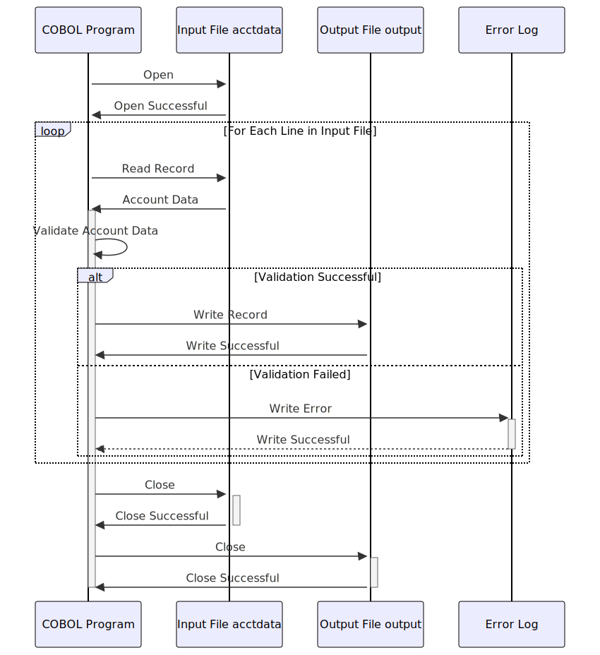

Gerado em: 1º de outubro de 2024
Título do Documento: Validador de Arquivo de Dados de Conta
Descrição Resumida:
Este programa valida registros de clientes de um arquivo de entrada (acctdata.txt) com base em critérios predefinidos. Cada registro é processado individualmente e, se passar em todas as validações, ele é gravado em um arquivo de saída (output.txt) em um formato especificado. Os registros que falham na validação são registrados e o processo continua até que todos os registros no arquivo de entrada sejam processados.
Histórias do Usuário:
Como um analista de dados, quero garantir que apenas registros de contas válidos sejam usados para análise. O programa deve validar automaticamente os registros com base em regras predefinidas e gerar um novo arquivo contendo apenas os registros válidos.
Épico Relacionado:
10 - Gerenciamento de Arquivos de Dados
Requisitos Técnicos:
- Leitura de Arquivo de Entrada: O programa lê os dados da conta do cliente em
acctdata.txt. Cada linha no arquivo representa um único registro de cliente.
- Validação de Registro:
- Validação de Número de Conta: Verifica se o número da conta é numérico e segue um formato específico (por exemplo, 10 dígitos).
- Validação de Data: Verifica se as datas (data de abertura da conta, data da última declaração, data de vencimento do pagamento) estão no formato correto e são logicamente válidas.
- Validação de Saldo: Garante que o saldo atual seja numérico e esteja dentro de um intervalo aceitável.
- Validação de Status da Conta: Verifica se o código de status da conta é válido (por exemplo, ‘A’ para Ativo, ‘C’ para Fechado).
- Gravação de Arquivo de Saída: Os registros válidos, após validação bem-sucedida, são gravados em
output.txt em um formato definido.
- Tratamento de Erros: Se um registro falhar na validação, o programa registra os detalhes do erro (por exemplo, número de conta inválido, formato de data inválido) em um arquivo de log de erros ou os exibe no console.
- Registro: O programa registra as principais ações, como o início e o fim do processamento, o número de registros processados, o número de registros válidos e quaisquer erros encontrados. Este log ajuda a monitorar o processo e solucionar problemas.
Modelos Relacionados:
- Conta:
AccountNumber: String - Identificador exclusivo da conta.CustomerName: String - Nome do titular da conta.CreditLimit: Decimal - Crédito máximo disponível na conta.CurrentBalance: Decimal - Saldo pendente atual na conta.AccountStatus: Char - Indica se a conta está ativa, fechada, suspensa, etc.LastStatementDate: Date - Data da última declaração gerada.PaymentDueDate: Date - Data de vencimento do próximo pagamento.
Configurações:
Input File Path: String - Caminho para o arquivo de entrada (acctdata.txt).Output File Path: String - Caminho para o arquivo de saída (output.txt).Log File Path: String - Caminho para o arquivo de log de erros.Account Number Format: String - Expressão regular ou padrão para validar o formato do número da conta.Date Format: String - Formato das datas no arquivo de entrada (por exemplo, ‘AAAA-MM-DD’).
Melhorias de Código:
- Processamento Paralelo: Implementar processamento paralelo para validar vários registros simultaneamente, melhorando o desempenho, especialmente para arquivos grandes.
- Arquivo de Configuração: Usar um arquivo de configuração para gerenciar parâmetros configuráveis em vez de codificá-los permanentemente.
- Regras de Validação Personalizáveis: Permitir que os usuários definam e configurem regras de validação por meio de um arquivo de configuração ou interface, tornando o programa mais flexível.
- Testes de Unidade: Implementar testes de unidade para cobrir diferentes cenários de validação, garantindo a qualidade e confiabilidade do código.
Melhorias de Segurança:
- Limpeza de Entrada: Limpe todos os dados de entrada para evitar ataques de injeção.
- Manipulação Segura de Arquivos: Garanta práticas seguras de manipulação de arquivos, incluindo permissões de arquivo adequadas e exclusão segura de dados confidenciais.
- Controle de Acesso: Se o programa fizer parte de um sistema maior, implemente mecanismos de controle de acesso para restringir o acesso a usuários autorizados.
Diagrama Conceitual:

–Made by “Smart Engineering” (by Compass.UOL)–